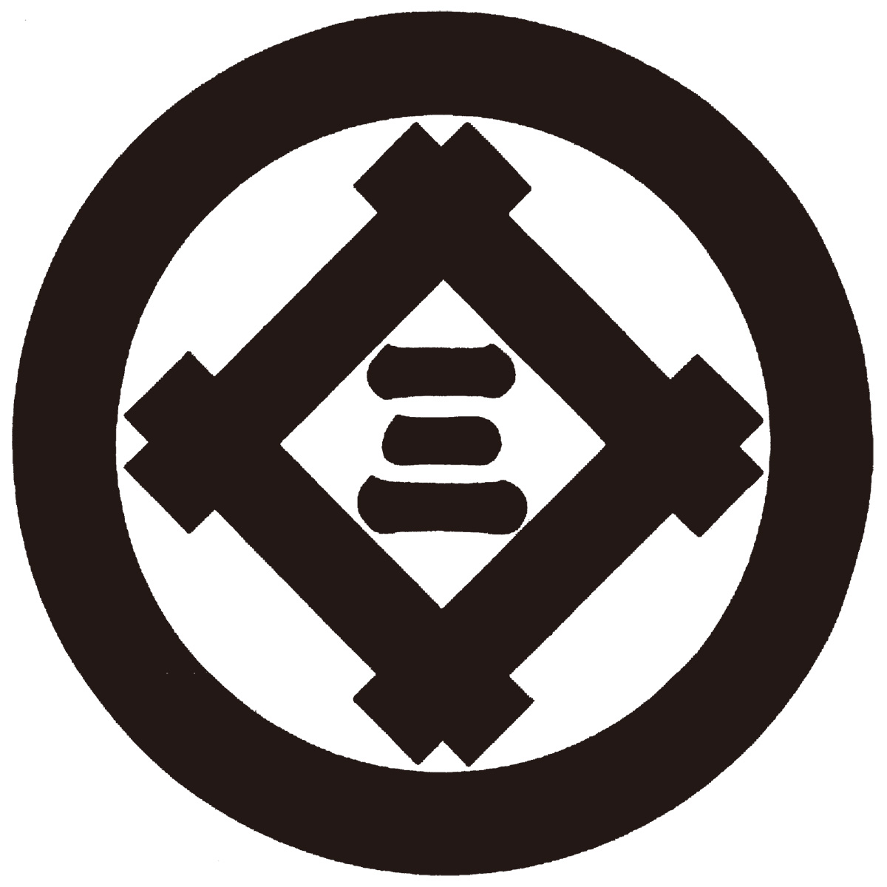
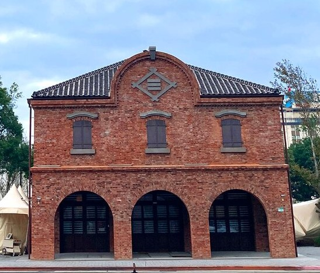
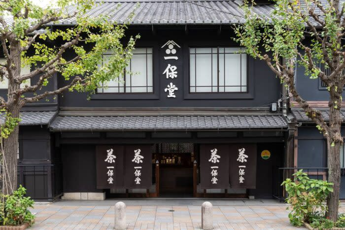
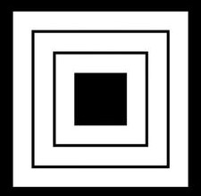

介紹
到了安定繁榮的江戶時代，雖然庶民百姓無法冠以姓氏，但也被允許使用家紋，家紋文化因此進入了全盛時期。隨著工商業的蓬勃發展，各行各業都用起「屋紋」以代表自家商號。這時也出現了在聚落中用以區別各家各戶的「家印」。家印以文字及簡單符號組成，除了押印、烙印在各家物品、財貨上以標示所有權，同樣也有跟家紋一樣的商標功能，繪製在暖簾與看板上。以下這些老舖的屋紋、家印，各位或許都不陌生。
 三井
「井桁」紋加上中間的「三」字，簡單明快的秀出了「三井」的家名。與浪人發跡的三菱岩崎家不同，三井以「越後吳服店」（分家後成為今日的三越百貨）起家，在江戶時代就是幕府御用的大豪商，明治時代也與政府維持密切關係，成為三大財閥之一。
位於台北，建於日治時代的三井物產舊倉庫，其山牆上就看得到三井的「井桁三」。不過該山牆於2016年市府拆遷倉庫過程中受損無法復原，如今的山牆與三井屋紋為重製品。
 三井物產舊倉庫
一保堂
愛喝日本茶的讀者應該都知道京都的三百年老舖「一保堂」。一保堂的家印為「山形」與「三星」。山形除了象徵財寶堆積如山，也代表珍貴的原物料經過翻山越嶺才送到手上，是普遍用於食品、釀造業者的家印。此外一保堂的屋號是由「山階宮」親王所賜，可能也是線索之一。
 一保堂茶鋪
金剛組
金剛組是被認定為「全世界最古老企業」，曾參與四天王寺創建，發跡至今超過一千四百年的建設公司，家印是代表「曲矩」的直角與「剛」字。「矩」除了發音同「金（かね／kane）」以外，也可引伸為正直、正確、童叟無欺的象徵，因此是許多行號愛用的家印。尤其曲矩又是從事營造的「大工」必備工具，由營造業使用更是名符其實。
 成田屋
或許有人還不知道，男星市川海老藏是位歌舞伎演員，而且這是個師徒代代承襲的名跡，現在這位光頭型男已是第十一代。
歌舞伎的「屋號」代表演員系譜，各屋號也有其「役者紋」。市川海老藏來自「成田屋」，役者紋是三重正方形，稱為「三枡」。「枡」是盛酒的方形木製容器，日文音「ます／masu」與「增」同，具有觀客粉絲多多益善的涵意。現在市川海老藏的歌舞伎公演或個人記者會等場合，都可以看到成田屋的三枡紋。